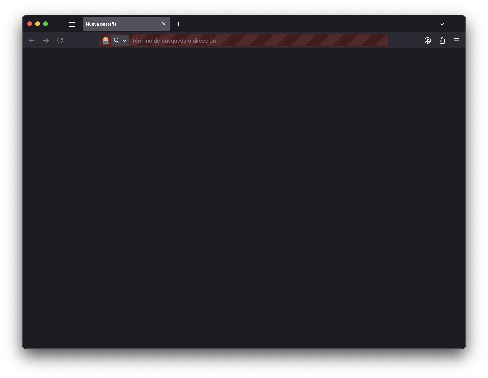
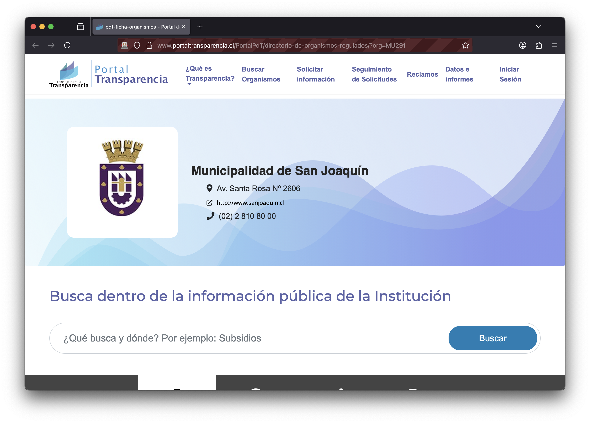
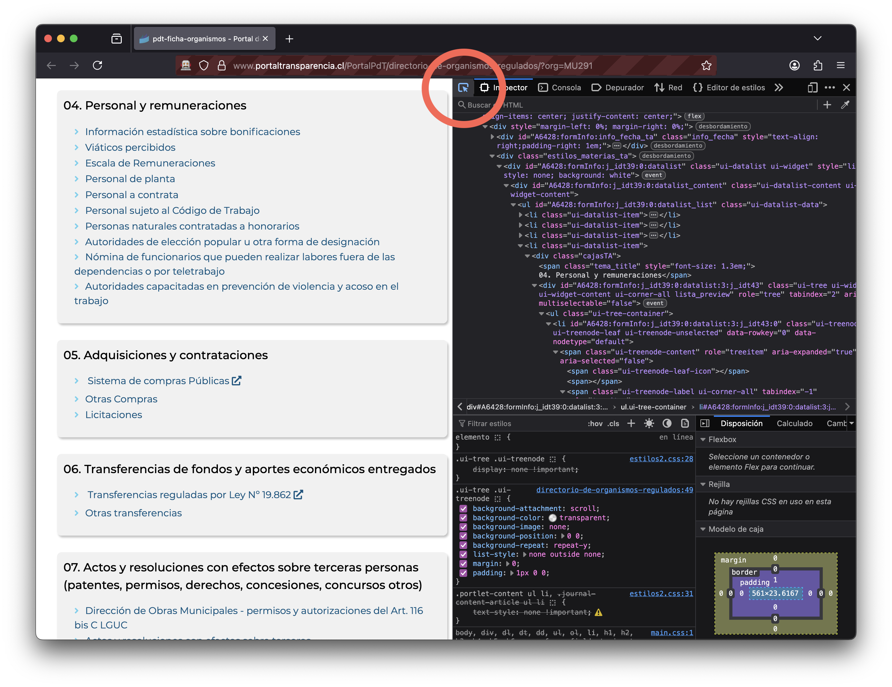
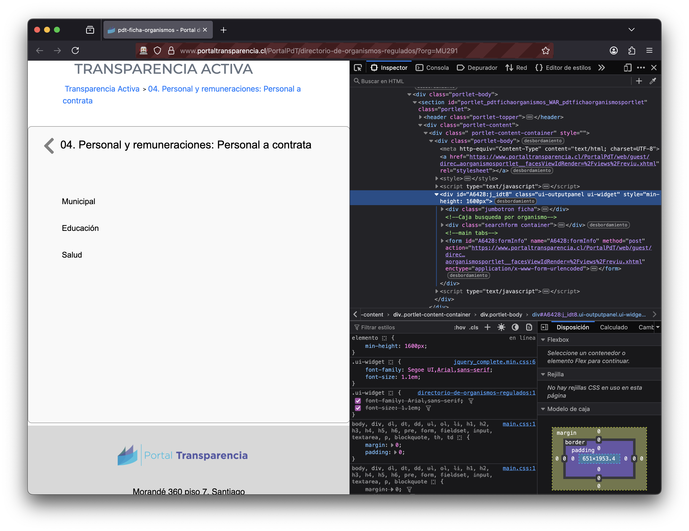

Tutorial: web scraping controlando un navegador web con {RSelenium} en R
15/7/2025
- Temas: web scraping datos
Selenium es un programa para automatizar navegadores web. Mediante el control de un navegador web, Selenium se vuelve una buena herramienta para realizar web scraping avanzado. El
paquete de R {RSelenium} nos permitirá controlar un navegador por medio de código de R, lo cual abre infinitas posibilidades al momento de automatizar la obtención de datos e información desde sitios web dinámicos y/o complejos.
En este tutorial aprenderemos a usar {RSelenium} para programar scripts de R que automaticen el control de un navegador para interactuar con sitios web y así scrapear datos más difíciles de obtener.
{rvest}
En otro post aprendimos a
hacer web scraping con {rvest}, un paquete muy sencillo de usar para obtener información desde sitios web. Entonces ¿por qué aprender también {RSelenium}? La diferencia es que Selenium es capaz de controlar un navegador web real en tu computador, como Chrome o Firefox, lo cual puede marcar la diferencia para extraer datos de sitios que buscan dificultar o impedir el acceso a herramientas automatizadas de web scraping.
Iniciar un cliente
La primera que necesitamos para hacer web scraping es un navegador web. La función rsDriver() se encarga de la descarga e instalación de un navegador para poder usarlo desde R. Elegimos Firefox, y opcionalmente definimos un puerto1.
library(RSelenium)
driver <- rsDriver(browser = "firefox",
port = 4560L, verbose = F,
chromever = NULL, phantomver = NULL)
Éste código pondrá a descargar el navegador y lo abrirá:
Aparece una ventana de navegador con la barra superior en rojo, indicando que está siendo controlado por otro programa, en este caso por R.
Ahora tenemos que pasarle el control a un objeto de R que representa al navegador remoto:
remote <- driver$client
Navegar a un sitio web
Desde el navegador remoto podemos ir ejecutando las acciones que necesitamos. Lo primero es navegar al sitio web que nos interesa
remote$navigate("https://www.portaltransparencia.cl/PortalPdT/directorio-de-organismos-regulados/?org=MU291")
Si nos vamos a ver el navegador, vemos que la página efectivamente se ha cargado.
Desde esta página web de Transparencia podemos extraer datos sobre la gestión de organismos públicos, pero para llegar a ellos tenemos que hacer clic en varios enlaces. Usaremos {RSelenium} para navegar el sitio y obtener los datos, generando un script que podremos reutilizar para actualizar los datos, obtener datos de manera masiva de este sitio, u obtener los datos del mismo portal pero de otro organismo público, dado que funcionan igual.
Identificar elementos
En este punto podemos usar el navegador para ir explorando el sitio. Obviamente podríamos ir haciendo clic en el mismo navegador, pero no es la idea. La idea es poder automatizar el proceso por medio de un script que controle las acciones que se hacen en el navegador. Lo que sí podemos hacer es usar las herramientas del navegador para ayudarnos.
Si hacemos clic derecho sobre cualquier elemento del sitio y elegimos Inspeccionar, se abrirá el panel de herramientas de desarrollador web.
Con este panel podemos inspeccionar el código fuente del sitio web, desde donde podremos extraer texto, enlaces, imágenes, tablas, y más.
En el panel de herramientas de desarrollador apretamos el botón de selección (destacado con un círculo en la imagen anterior, o comando + shift + C) para que cuando pasemos el cursor sobre los elementos del sitio web, se destaque el código fuente correspondiente.
Cuándo identificamos el elemento que necesitamos, vamos al código correspondiente, hacemos clic derecho, y copiamos el xpath o el selector css. Ambas son formas de identificar de manera única elementos en un sitio web, pero esta vez copiaremos el xpath.
Interactuar con elementos
Ahora que tenemos identificado el enlace que queremos apretar por medio de su xpath, le decimos al navegador que le haga clic:
remote$findElement("xpath",
'//*[@id="A6428:formInfo:j_idt39:0:datalist:3:j_idt43:4:j_idt47"]')$
clickElement()
Funcionó! El navegador navegó al enlace que le pedimos.
Ahora repetimos el proceso para navegar al enlace Municipal:
remote$findElement("xpath",
'//*[@id="A6428:formInfo:j_idt76:0:j_idt78"]')$
clickElement()
Ahora el sitio muestra una selección de todos los años que tienen datos. Si volvemos a repetir el proceso, nos damos cuenta de que el xpath del año 2025 termina con un 0, y el del año 2024 termina en 1, el de 2023 en 2, y así sucesivamente.
Esto significa que podríamos automatizar el acceso a todos los años simplemente creando un loop que vaya desde 0 a 10 (año 2015). Pero por ahora accedamos al segundo año:
remote$findElement("xpath",
'//*[@id="A6428:formInfo:j_idt94:0:j_idt95"]')$
clickElement()
Ahora llegamos a una página con los meses, donde se repita el mismo patrón: todos los meses comparten un xpath que termina con el número del cero a la cantidad de meses presentes.
Si navegamos alguno de los meses, finalmente llegamos a los datos que estábamos buscando:
remote$findElement("xpath",
'//*[@id="A6428:formInfo:j_idt110:0:j_idt111"]')$
clickElement()
Obtener el código fuente del sitio
Ahora que llegamos a una tabla de datos, podemos pedirle al navegador que nos entregue todo el código de fuente del sitio, para
continuar el scraping con el paquete {rvest}:
library(rvest)
fuente <- remote$getPageSource()[[1]]
sitio <- read_html(fuente)
{rvest},
revisa este tutorial primero
Podemos usar la función html_elements() para extraer elementos del sitio por su selector CSS, y convertirlos en texto. Por ejemplo, extraer el texto que está en el título de la tabla:
sitio |>
html_elements(".section-title") |>
html_text2()
[1] "04. Personal y remuneraciones"
Extraer tablas
Si es que el sitio web tiene datos en forma de tabla, podemos extraerlo fácilmente con la función html_table()
tabla <- sitio |>
html_table()
tabla[[1]]
# A tibble: 100 × 19
Estamento `Nombre completo` `Cargo o función` `Grado EUS o jornada`
<chr> <chr> <chr> <int>
1 Auxiliar ACEVEDO BERTRIN, ANDR… CUADRILLA OPERAC… 14
2 Administrativo AEDO ACEVEDO, ESTEFAN… ADMINISTRATIVA H… 11
3 Administrativo AGUILAR MARTINEZ, ELI… ADMINISTRATIVO D… 12
4 Administrativo AHUMADA COFRE, GERALD… ADMINISTRATIVA V… 16
5 Profesional ALARCON HERRERA, CARL… PROFESIONAL DE A… 6
6 Administrativo ALARCON NEIRA, CLAUDI… INSPECTOR VIGILA… 14
7 Auxiliar ALCAINO MARTINEZ, EDU… AUXILIAR ASEO Y … 14
8 Administrativo ALDERETE ALMENDRAS, N… ADMINISTRATIVA V… 16
9 Administrativo ALTAMIRANO ROJAS, ANN… SECRETARIA ADMIN… 11
10 Administrativo ALVAREZ FARFAN, CYNTH… INSPECTORA FERIA… 16
# ℹ 90 more rows
# ℹ 15 more variables: `Calificación profesional o formación` <chr>,
# Región <chr>, `Asignaciones especiales` <chr>,
# `Remuneración bruta mensualizada` <chr>,
# `Remuneración líquida mensualizada` <chr>,
# `Remuneraciones adicionales` <chr>, `Remuneración Bonos incentivos` <chr>,
# `Derecho a horas extraordinarias` <chr>, …
Ahora que tenemos los datos, sólo resta guardarlos en nuestro proyecto de R y seguir procesándolos en otro script.
tabla[[1]] |> readr::write_rds("datos.rds")
Descargar archivos
Finalmente, tenemos la opción de descargar los datos de este sitio como un archivo en el botón Descargar CSV que aparece arriba. Pero a diferencia de los enlaces, generalmente los botones de los sitios web no conllevan un enlace, sino que esperan que los aprietes para ejecutar un acción internamente que te entrega el archivo. En estos casos, sería imposible obtener el enlace del botón y descargar el archivo enlazado con download.file("enlace"), Sino que simplemente hay que perder el botón y esperar que el sitio te entregue el archivo.
Utilizamos las herramientas del navegador para identificar el xpath o selector CSS del botón para presionarlo.
# descargar archivo
remote$findElement('css selector',
'.fa-file-csv')$
clickElement()
Como estamos controlando un navegador web real, el archivo descargado aparecerá en la carpeta de descargas de tu computadora, no en tu proyecto de R. Pero podemos mover el archivo desde la carpeta de descargas a tu proyecto con el siguiente código:
library(fs)
# crear una carpeta en tu proyecto
dir_create("datos")
# mover archivo descargado al proyecto
file_move(path = "~/Downloads/TransparenciaActiva.csv",
new_path = "datos/TransparenciaActiva.csv")
Opcionalmente, al crear el navegador con rsDriver(), puedes configurar el navegador para especificar la ubicación de las descargas:
library(here)
perfil <- makeFirefoxProfile(
list(browser.download.dir = here())
)
rsDriver(browser = "firefox",
chromever = NULL, phantomver = NULL,
extraCapabilities = perfil)
Terminar la navegación
Cuándo termines de usar el navegador, tienes que cerrar la sesión. Esto se hace principalmente para liberar el puerto que asignaste al navegador al crearlo.
driver$server$stop()
Pero te preguntarás, ¿por qué hicimos todo esto si desde el principio podíamos apretar el botón de descargas y obtener los datos? Lo primero es porque de esta manera tenemos un script con el que podemos seguir las instrucciones paso a paso para volver a descargar exactamente el mismo archivo en el futuro. Pero también, porque podemos usar este Skip para modificarlo y obtener un archivo de otra fecha, o incluso modificar la dirección de raíz del scraping y obtener el archivo equivalente pero de otro organismo público.
El potencial del web scraping no solamente obtener datos, sino obtenerlos de una manera tal que podamos automatizar la obtención masiva de los mismos.
Otros
Tomar captura de pantalla
También es posible capturar lo que está mostrando el navegador por medio de una captura de pantalla:
remote$screenshot(file = 'pantallazo_1.jpg')
Este tipo de acciones no es posible con herramientas de web scraping como {rvest}, que funcionan navegando directamente el código fuente del sitio, sin cargarlo como normalmente haría un navegador web.
Desplazarse por el sitio
Otro tipo de acciones que a veces son necesarias de hacer para obtener datos en un sitio es scrollear por el mismo para que se carguen los elementos. Esto puede hacerse en Selenium ejecutando un script:
# scrolear
remote$executeScript(paste("window.scrollBy(0, ", 500, ");"))
# verificar visualmente
remote$screenshot(file = 'pantallazo_2.jpg')
Cambiar dimensiones de la ventana
remote$setWindowSize(width = 640, height = 480)
Obtener dimensiones de la ventana
ventana_alto <- remote$executeScript("return window.innerHeight")[[1]]
ventana_ancho <- remote$executeScript("return window.innerWidth")[[1]]
Grabar tu interacción con el navegador
Usa Selenium IDE para grabar interacciones con un sitio. Puedes instalar esta extensión de Firefox para grabar tu interacción con un sitio web, y que queden registrado todos los pasos que hiciste en el sitio, de manera que puedas reproducirlos después en un script.

¿Necesitas aprender R para análisis de datos desde cero? Inscríbete a mi curso!
-
El puerto es como la conexión entre tu computador y el navegador, por lo que no pueden haber dos navegadores en un mismo puerto. Si necesitas abrir más de un navegador, o te aparece ocupado el puerto, intenta con otro. ↩︎
- Fecha de publicación:
- July 15, 2025
- Extensión:
- 8 minute read, 1658 words
- Categorías:
- Tutoriales
- Tags:
- web scraping datos